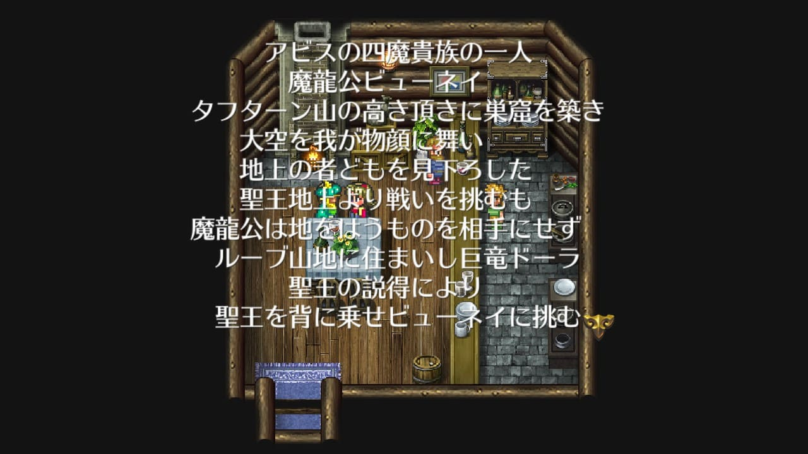
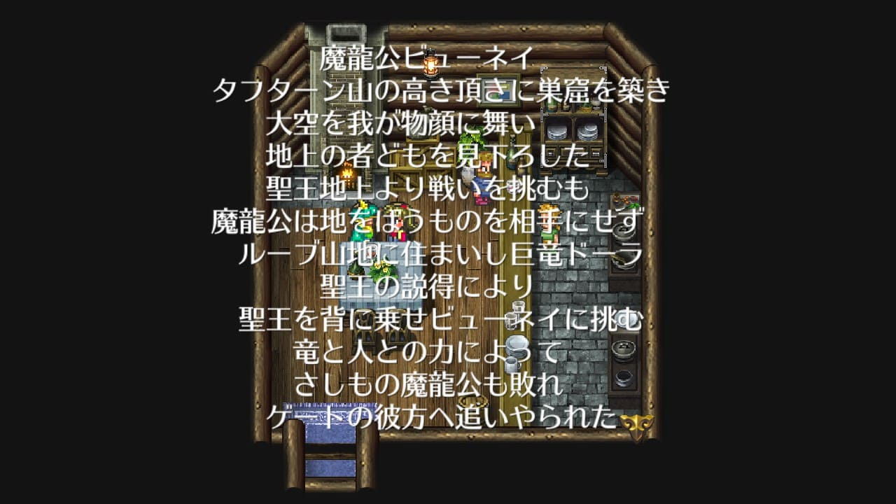
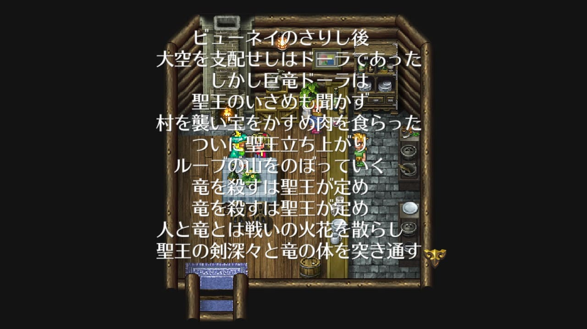
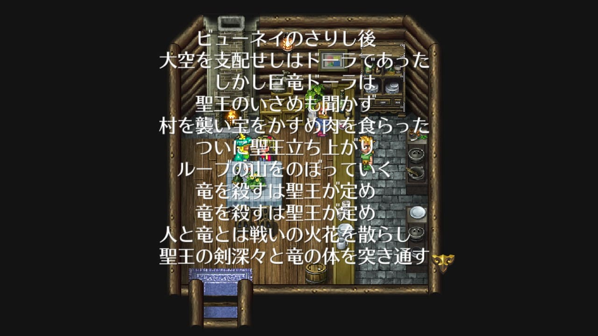

ドーラとグゥエイン
ドーラ
ドーラはグゥエインの母親。
画像はロマサガRSのドーラ
ロマサガRSのドーラの詳細。グゥエイン同様ルーブ山地に住んでいた。魔王よりもはるか昔から生きていたらしい。
聖王とドーラの関係は、詩人の古い詩の中で語られています。
聖王はドーラと共にビューネイに挑み、見事討伐。アビスへと追い返すことに成功します。


しかしその後、ドーラは人間の村を襲い、宝をかすめ、肉を食らった。聖王にいさめられるが、聞き入れず、最終的にドーラは聖王に討伐される。

 


詩人の語りの最後、聖王は瞳をぬらし声を上げたとありますが、ドーラはどのような心情だったのでしょうか。これはゲーム中のグゥエインの台詞から少しだけ垣間見ることができます。
グゥエイン
グゥエインはドーラの子供。口調は男性っぽいが、ロマサガRSでは性別不明として扱われている。グウェインじゃなくてグゥエインです。
画像はロマサガRSのグゥエイン
ロマサガRSのグゥエインの詳細。
ドーラをなくしたグゥエインは聖王に育てられました。
ゲーム中では、ビューネイを討伐するために共闘を持ちかける事ができる。聖王とドーラと同じような関係になる。

一緒にビューネイを倒した後はちょっと仲良くしてくれる。
しかしドーラと同様に、グゥエイン自分の住処であるルーブ山地の近くにある小さな村を襲ってしまう。
グゥエインをいさめようとするが、グゥエインは、「肉を食らい、宝を奪うのは竜の宿命である」と主張。聖王とドーラの時と同じように人間と竜は相容れず、戦うことになってしまう。
戦いに勝つと、グゥエインは自分の心情を吐露します。
せめて友の腕の中でって、なんかグッとくるものがありますよね。グゥエインはツンデレなので「人間にしてはなかなかだったぞ」と言ってくれていたり、村を襲う前に訪れた時は「ゆっくりしていけ」と言ってくれたりしています。主人公のことを『友』として見てくれているんです。
グゥエインは「母の気持ちがようやく判った」と言っています。聖王とドーラも似たような関係だったのでしょう。
本来相容れない存在である竜と人間の間に一時的にでも信頼関係を築くことができたこのエピソードは、ロマサガ3のイベントの中でも特に好きなものの一つです。
グゥエインと戦って手に入れた竜鱗は竜鱗の剣にしましょう。
グゥエインと共闘後に討伐した場合、エンディングで主人公が弔いにルーブ山地に剣を置くシーンがあります。ここで置いている剣が、グゥエインの竜鱗から作った竜鱗の剣と想像すると胸が熱くなること請け合いです。